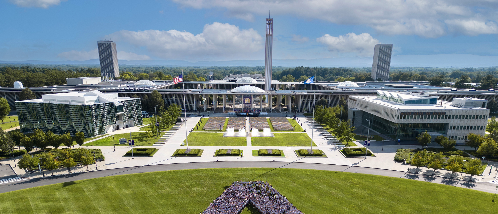

CS PhD Open Positions in Chong Liu Lab at UAlbany (Fall 2024)

Beautiful UAlbany Campus in 2023 (Photo Credit: UAlbany Photo Database)
About me
I’m Chong Liu, an Assistant Professor of
Computer Science at the
State University of New York at Albany (UAlbany) starting Fall 2024. Before that, I received my PhD in
Computer Science from
UC Santa Barbara in 2023. Currently I’m a
Data Science Institute Postdoctoral Scholar at the
University of Chicago. My publications mainly appear in top machine learning conferences and journals like ICML, AAAI, AISTATS, UAI, and JMLR. I’m the
editorial board reviewer of JMLR and the lead organizer of the NeurIPS-2023 Workshop on New Frontiers of AI for Drug Discovery and Development (
AI4D3-2023).
My research interests are Machine Learning and AI for Science:
- Bayesian optimization
- Bandit algorithms
- Active learning
- Experimental design
- AI for materials science and drug discovery
I’m looking for two CS PhD students to join my lab at UAlbany starting Fall 2024. Both positions will be fully funded. More information can be found on my
personal homepage and
CS PhD program website.
What will I provide as a PhD advisor?
- Fully funded CS PhD positions.
- Comprehensive, patient, and responsible research training.
- Friendly study and research environment and abundant computing resources.
- Strong support for collaborations, internships, award nomination, job hunting, and career development.
What do I expect from you?
- Be responsible and stay self-motivated. They are essential for you PhD student to navigate the inherent uncertainty of research, enabling you to stay focused and achieve success.
- Be curious and be able to think in depth. Given a new idea that you are interested in, are you happy to dig into it?
- Math background (statistics, probability, linear algebra) and coding skills (programming languages and ML/AI developing tools).
- Bachelor’s degree (or higher) in computer science, math, statistics, operations research, electrical engineering, or related areas.
Why UAlbany CS?
- Founded in 1967, UAlbany CS has a rich history with two Turing Award laureates (an alumni and a faculty member).
- Current CS faculty team is small but prestigious, including 4 NSF CAREER Award winners.
- AI research at UAlbany is going strong! In 2022, there is $75 million funding support from the New York State, specifically for AI research at UAlbany, to recruit 27 faculty members in AI and build a supercomputing center. By Aug. 2023, 18 positions have been filled and I’m one of them. In Oct. 2023, UAlbany and IBM announced new $20 million AI research collaboration.
- Albany and its nearby region, known as the capital region, is now the research center of semiconductor and AI in the US with many collaboration and internship opportunities. In Aug. 2023, the prestigious Albany NanoTech Complex has officially returned to UAlbany CNSE, the home college of UAlbany CS. Also, IBM Research AI Hardware Center and GlobalFoundries Manufacturing Center are in capital region.
Why Albany, NY?
- As the capital city of the New York State, Albany is a mid-size city where you can enjoy both convenient city life and comfortable country life.
- Albany has a lot of living resources but low cost.
- It’s easy to travel from Albany. You can fly directly to all major cities in East Coast and Midwest in the US from local Albany airport. After 2.5 hr by car or train, you can fly directly to most major cities in the world from New York City. Also, you can drive 2.5 hr to Boston, 3.5 hr to Montreal, 4.5 hr to Buffalo, or 6 hr to Toronto.
Join us!
Feel free to drop me an email to "
chongliu.cs [at] gmail.com" including the following information. Hope to see you in Albany in Fall 2024!
- Email title: "UAlbany CS PhD Application by {{YOUR_NAME}}".
- Your research interests in several sentences.
- Attach your CV, transcript, and a representative writing sample (paper/preprint if any).
I’ll attend
NeurIPS-2023 in person in Dec. 2023! Happy to chat in person if you are interested!